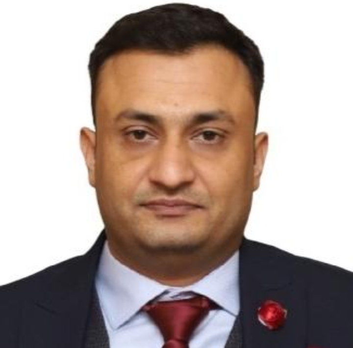
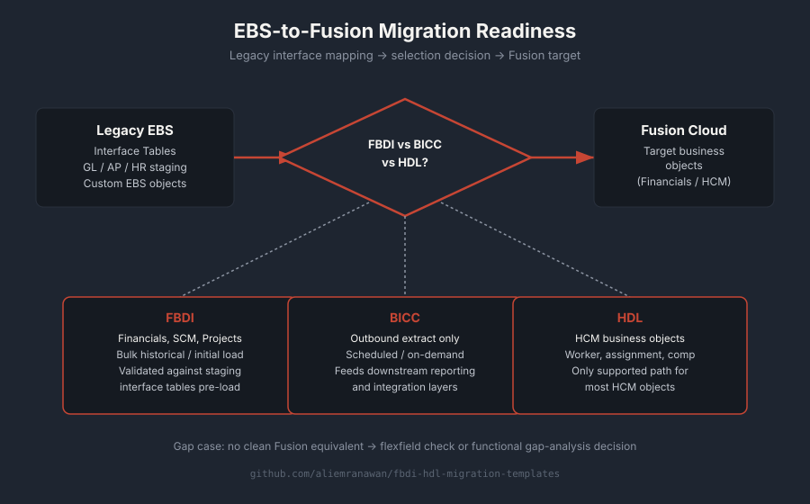
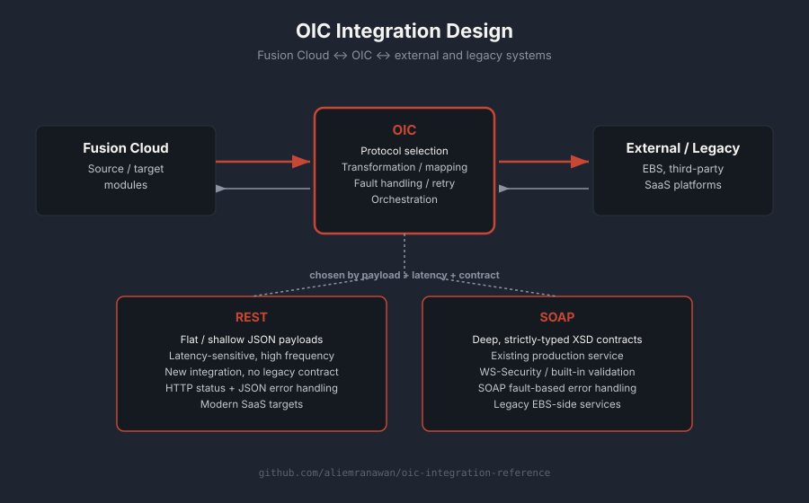
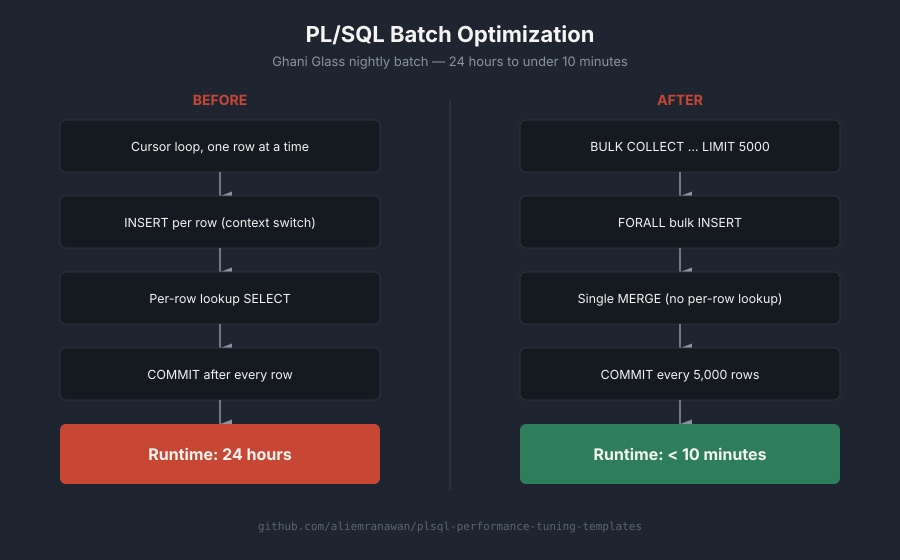
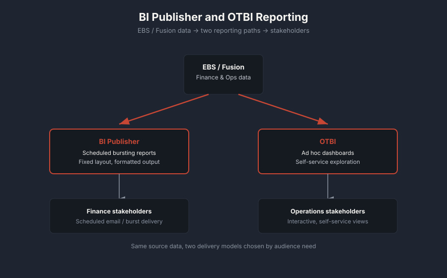

EBS R12, Fusion Cloud, and everything in between. I write the PL/SQL, build the integrations, and understand the business process well enough to explain why it matters.

I'm a Senior Oracle Techno-Functional Consultant based in Lahore, Pakistan, with over 10 years of experience across Oracle EBS R12 and Oracle Fusion Cloud, covering Finance, HCM, SCM, and CX.
My work sits at the intersection of development and function. On the technical side, I write PL/SQL, build integrations in OIC, and work in Oracle Forms and Reports, OAF, APEX, VBCS, and BI Publisher. On the functional side, I understand the business processes well enough to know why a report needs to look a certain way, not just how to build it.
I've delivered implementations for manufacturing companies, public sector clients, and organizations across the GCC. I'm currently looking for my next role, with a focus on Oracle EBS, EBS-to-Fusion migration, and Oracle Cloud integration work, open to opportunities globally with a preference for onsite or hybrid arrangements.
Forms and Reports, Interface tables and APIs, Multi-Org architecture, Workflow and AME, functional configuration across Finance, SCM, and HCM.
Finance, HCM, SCM, and CX modules. OTBI and BI Publisher reporting. FBDI and HDL data migration. Page Composer and Application Composer.
Oracle Integration Cloud. REST and SOAP API design. BICC extracts. End-to-end integration between EBS, Fusion, and third-party systems.
PL/SQL, Oracle Forms and Reports, OAF, APEX, VBCS, BI Publisher.
Selection criteria for FBDI vs BICC vs HDL. Legacy interface mapping. Functional gap analysis between EBS and Fusion equivalents.
Delivered technical solutions across Oracle EBS and Fusion Cloud engagements, working on integrations, custom reports, and data migration for enterprise clients. Role ended due to a company-wide layoff.
Worked on Oracle implementation and support projects, applying both technical development and functional configuration skills across client engagements.
Built and optimized PL/SQL processes supporting manufacturing operations. Reduced a critical batch process from 24 hours to under 10 minutes.
Managed IT operations with a focus on Oracle Apps support and internal systems reliability for a manufacturing environment.
Started my career in core IT operations before moving into Oracle applications work.
Rebuilt a critical batch process at Ghani Glass using optimized PL/SQL, freeing up operational reporting that used to be a full day behind.
Consistent hands-on delivery across Oracle EBS R12 and Fusion Cloud, spanning Finance, HCM, SCM, and CX for manufacturing, public sector, and GCC clients.
Equally comfortable writing PL/SQL and explaining the business process behind it, reducing miscommunication between technical and functional teams.

Analyzed legacy EBS interface tables and mapped them to Fusion equivalents, working through FBDI vs BICC vs HDL selection for different migration scenarios.
View repo →
Designed integration flows in Oracle Integration Cloud connecting Fusion Cloud modules with external and legacy systems, choosing REST or SOAP based on payload and latency needs.
View repo →
Rebuilt a manufacturing batch process at Ghani Glass, cutting runtime from 24 hours to under 10 minutes through query optimization and process redesign.
View repo →
Built bursting reports in BI Publisher and ad hoc dashboards in OTBI for finance and operations stakeholders across EBS and Fusion environments.
Open to Oracle EBS, EBS-to-Fusion migration, and Oracle Cloud Integration roles globally. Onsite and hybrid preferred.